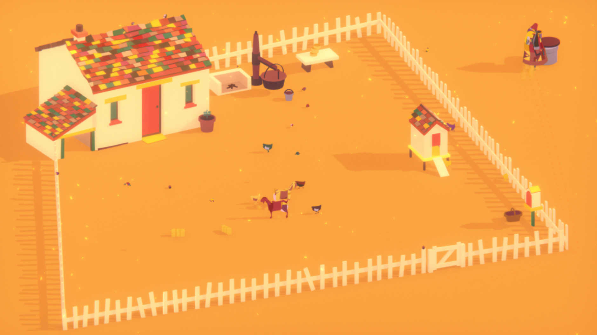
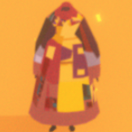
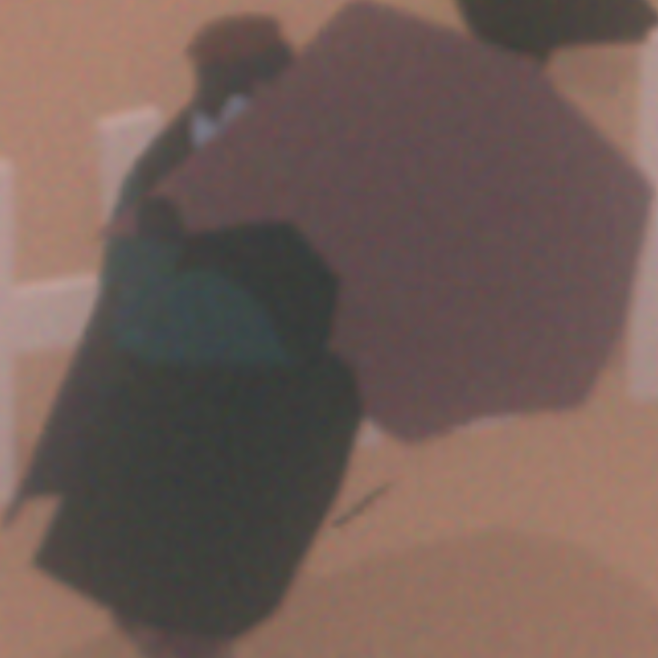
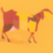
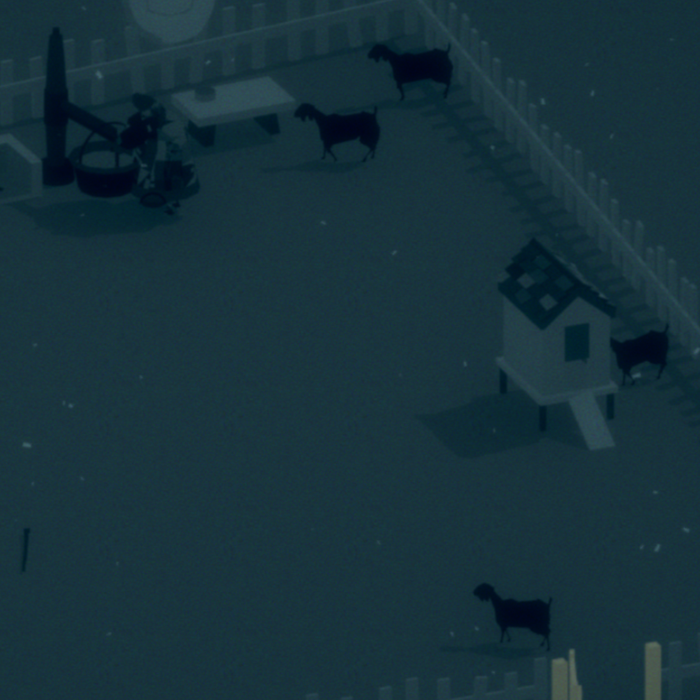
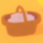
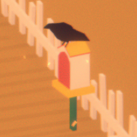

Nick Grundman's Very Professional Portfolio
Nick Grundman's Very Professional Portfolio
Nick Grundman's Very Professional Portfolio
Nick Grundman's Very Professional Portfolio
Hover over the images for more information


Sound effects: Clinks of a can, water pouring, whistling, rooster crowing, gentle
footsteps
Music: Relaxing, simple. Gets ominous near the end.
Controls: Mouse only, point and click, moves Tikvah around
The
game tells you nothing other than showing what you can click on. You have to
discover what everything does through experimentation.
Each day lasts
the same length and there are only a certain number of days. Playthroughs are
supposed to take about an hour and you can't go back a day without a full
reset.
Can build your own routine. I always grabbed my cup, opened the
coop, and got water. After that, I watered the plant, milked the goats, and made
some cheese. When the merchant came, I’d either buy some hay or try to save up for a
new goat.
Maximum travel distance is very slightly outside of the gates
to get water from the well, no further.
Can water plant once a day, grows
slightly every morning that it is watered.
Only human other than Tikvah is the
merchant, who comes in the afternoon just before it gets darker once a
day.
Merchant sells hay for one cheese, new goats for 5 cheese, and
brings mail that can be read. You can also sell goats to him for 5 cheese.
Letters show hints of the outside world… like how reportedly Tikvah’s goat cheese is
being sold by some merchant in the market.
Mail starts out as hopeful messages
from family, but gets more and more distressing each day.
Goats can be called
over and pet whenever, they eat some hay once a day, and can be milked once a
day.
Goat milk can be turned into cheese, one wheel per goat milk bucket.
Chickens can be let out of the coop in the morning and go to sleep every
night.
Can collect eggs from the chicken coop
Can go to sleep every
night, goes into the morning If you wait too long to go to bed Tikvah goes to sleep
on her own
Goats (can milk, can pet)
Milk bucket (used to milk goats)
Milk vat (can
pour milk in, put on flame, turn cooked milk into goat cheese)
Chicken coop
(can collect eggs from, can open and close)
Water cup (can collect water from
well, can water plant)
Plant (can be watered)
Well (can collect water
from)
House (can enter, advances to next day if nighttime)
Tikvah (can
call goats over, read letters)
Merchant (can sell cheese or goats, buy hay or
goats, receive letters)
Fence (can open and close)
Shrine (can look
inside)
Stick (can drag behind)



The letters are from usually different people and reference changes in the outside
world, mostly unknown to Tikvah and the player. The letters are an incredibly major
part of the game and serve as Tikvah's only connection to the outside world and the
ongoings of the inevitable ruin.
"Where the Goats Are" is a beautiful game. The atmosphere and story hooked me and
caused me to feel much more than I expected from a free, simple itch.io game.
Particularly In my first playthrough, when I knew nothing about the game other than
it looked and sounded pretty and the description on itch.io, I felt genuinely upset.
My goats starved to death because I was unable to keep up with my chores, and I felt
horrible. My second playthrough was a lot more streamlined, and I discovered things
I hadn't interacted with previously, which was fun. The replayability is limited,
and I don't think more than two playthroughs are necessary, but one is enough to
experience everything if you pay attention (unlike me). Mostly, I was collecting
screenshots, audio recordings, and transcribing every letter my second go around.
The emotional weight of my first playthrough did not reemerge because I knew there
was nothing I could do. Even with all of my might and care, I could never save
Tikvah or her farm. This thought comforted me, oddly.
As to the message of the game, I am undecided. I can't tell if "it" is a
metaphor for death, industrialization, pollution, familial loss, disease, or
something else. No matter which way it's interpreted, however, the grief hurts all
the same. I was genuinely attached to Tikvah's farm and scraping together a
prosperous living despite the challenges of it all. Losing this simple, joyous life
and hearing of her family's suffering was agonizing.
In the description on itch.io, the game is described as meditative, which I
found true, but I think it drags on a little too long. It just stretches out my
feeling of dread and doesn't feel good at all. The glitches as well were quite
frequent and unfortunately distracted from the content. For example, I had to replay an entire day
twice because it kept fading to black and (despite waiting for minutes) never
loading the next day. Regardless, this game is fantastic, and, even with its flaws,
I truly enjoyed playing it.
I let the chickens out just before night and then they went outside, wouldn’t
go to sleep, and trying to open it again after closing it said “Chickens are sleeping.”
I got my water cup stuck in the gate and can’t grab it again because the gate
hitbox blocks the mouse.
Merchant sometimes doesn’t let you talk to him, Tikvah gets into position and
then they stare at each other.
Screen fades to black at night and sometimes needs a reload (and replaying
the day...) to advance to the next day.
Hitting escape to enter/exit the menu when pouring milk and stirring it in
the pot sometimes makes the milk disappear
The large stick doesn't get dropped when you pick up the water cup, but
instead clips inside of it and looks strange.
Sometimes the timers get
interrupted when milking or cooking milk and it behaves strangely


It took awhile to get my bearings. For the first day or I didn't milk my goats, so I
had nothing to do with the merchant.
Second day, I finally learned how to make
cheese, but, since I waited too long making it, I didn't have time to visit the
merchant. Great. I did learn how to get to the well and water my plant though.
I ignored the merchant for a while and forgot to get enough hay. Will my goats
starve? The merchant never came today. The goats are already hungry and I have no
food for tomorrow. Can bury dead goats. I bought a new one with all my cheese.
Chickens didn’t come out either. They haven’t come back. Crows everywhere. Can’t
milk my goat. The basket is apparently to get eggs from the coop. I never got to do
this though, because my chickens disappeared by the time I learned. A dead song bird
on the ground. The merchant sprinted in much faster than usual today. I feel like
I’m walking slower. “Merchant has nothing to trade.” Nothing to do. Next day, there
is nothing. No objects, no goats, no crows. Everything is gray. It cuts to black,
shows credits, ends.



This time I'm getting straight into it, and recording events much more carefully.
First day, I made cheese immediately and figured out how to collect eggs from
the chickens. I'm still not sure what to do with the eggs, but I have them. I sold
my one cheese for more hay, got the letter, and watered my plant. Milked my other
goat and made another goat cheese before going to bed.
Second day, I did much the same. It's very easy to follow a routine in this
game. Interestingly, my eggs seem to have disappeared from the basket where I left
them. I also accidentally deleted my milk by going into the menu while stirring it.
The glitches are somewhat common, which definitely ruins the immersion somewhat. I
figured out what to do with the eggs! You bring them in the home and they disappear.
Presumably, Tikvah eats them. I also discovered that I can pick up the large stick
next to the door, but I'm not sure what it does yet. I watered my plant very late.
Third day, I saw the first crow. He was on the bottom right thing and flew
away when I got close. I figured out what the stick does. If I click it again when
in Tikvah's hand, she draws in the ground behind her. Besides that, everything else
I did the same. From now on these entries will get shorter.
Day four, I started to put both the goat's milk in at the same time to save
time. Letters are getting sadder. Drew some circles in the sand.
Fifth
day, nothing of note happened. Tikvah seems to be walking slower. The scary
nightmare goats are back. Uh oh. Didn't have time to water the plants.
Sixth day, I just went through the motions. It's hard to get everything done
because Tikvah has slowed down so much. My plant is quite neglected at this point.
Seventh day, the Merchant never came. I finally saved up enough to buy a new
goat without losing any like last time, but I have nobody to sell to.
Day eight, my chickens have disappeared. Just like last time, around the same
time. This makes me think the disasters are purely timing, because I feel as though
I am prospering. Tikvah has gotten so slow that one mistake in pathing (i.e.,
forgetting to pick up the milk bucket after milking) could lead to not being able to
do anything else. Merchant's back, so I got a new goat and some hay with my riches.
Day nine, there are three crows now. They don't leave when I get close. I
didn't even have enough time to milk all three goats. No merchant again.
Tenth day, many many crows. Death is definitely inevitable. Can't milk my
goats. Just passing time.
Day eleven, it appears it has reached me. As before, the merchant sprints in
and out with nothing to sell, the goats are spooked, and a black rain surrounds
Tikvah's farm. Goats all die and flop over. Nothing to do but sleep.
Twelth and final day, I'm not sure why I'm still here. I went to bed. Roll
credits.
Have you tried shutting the hell up?